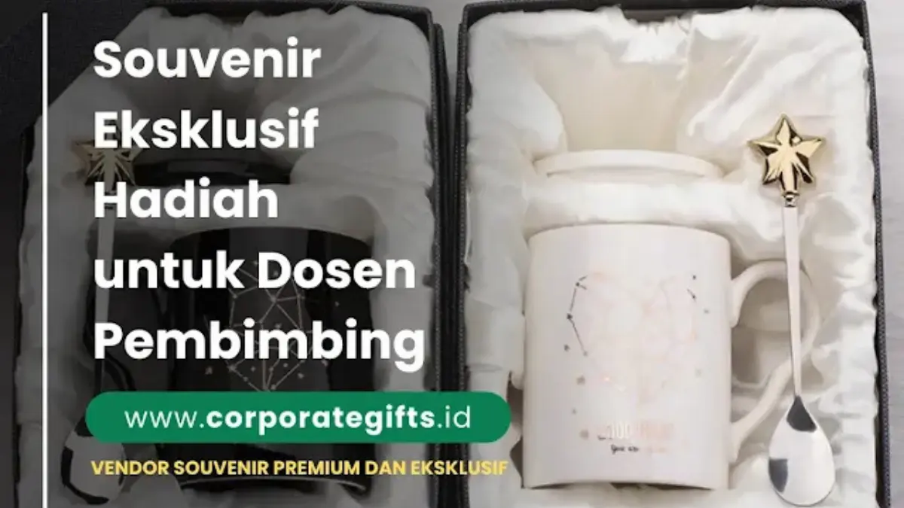

Corporate Gifts ID - Souvenir hadiah untuk dosen pembimbing adalah cinderamata apresiasi yang diserahkan oleh mahasiswa kepada dosen pembimbing setelah seluruh rangkaian proses evaluasi akademik - seperti sidang skripsi, tesis, disertasi, atau yudisium kelulusan - dinyatakan selesai secara resmi. Pemberian hadiah ini bukan sekadar tradisi seremonial, melainkan manifestasi rasa terima kasih yang mendalam atas dedikasi waktu, transfer ilmu pengetahuan, kesabaran, dan bimbingan moral yang telah dicurahkan dosen sepanjang masa studi.
Karena menyangkut etika kelembagaan dan integritas dunia akademik, pemilihan hadiah untuk dosen pembimbing menuntut kehati-hatian khusus. Hadiah yang ideal harus memadukan nilai fungsional, kepantasan etis, ketulusan rasa hormat, serta dikemas secara santun tanpa menimbulkan kesan transaksional.
Poin Kunci Memilih Hadiah Dosen Pembimbing:
- Waktu Penyerahan Pasca-Kelulusan: Berikan hadiah hanya setelah nilai resmi keluar atau pasca yudisium guna menjaga objektivitas dan kepatuhan kode etik kampus.
- Fokus pada Manfaat Kerja: Utamakan barang fungsional penunjang aktivitas mengajar seperti buku agenda kulit, pulpen metal grafir nama, atau tumbler stainless.
- Sentuhan Personal Santun: Sisipkan kartu ucapan tulisan tangan berisi apresiasi spesifik atas arahan dosen selama masa penelitian.
- Kemasan Rapi & Elegan: Bungkus hadiah menggunakan hardbox pita satin bernuansa warna netral seperti krem, navy, atau abu-abu.
Mengapa Souvenir untuk Dosen Pembimbing Itu Penting?
Interaksi antara mahasiswa dan dosen pembimbing merupakan salah satu pilar terpenting dalam perjalanan pendidikan tinggi. Selama berbulan-bulan, dosen tidak hanya mengoreksi naskah metodologi dan analisis data, tetapi juga melatih ketajaman berpikir kritis dan kedisiplinan akademis mahasiswanya.
Memberikan souvenir kantor atau cinderamata elegan di akhir masa studi menjadi jembatan penghubung untuk bertransformasi dari relasi dosen-mahasiswa menjadi hubungan kemitraan profesional jangka panjang yang harmonis.
Makna Simbolis Souvenir dalam Dunia Akademik
Dalam tradisi perguruan tinggi, pemberian cinderamata kepada dosen pembimbing memiliki dua dimensi makna filosofis:
- Simbol Apresiasi Dedikasi: Bentuk pengakuan tulus mahasiswa terhadap waktu luang dan tenaga ekstra yang telah dialokasikan dosen di luar jam perkuliahan reguler.
- Investasi Jejaring Akademis & Profesional: Menjaga silaturahmi positif yang sangat bermanfaat ketika mahasiswa membutuhkan surat rekomendasi studi lanjut (S2/S3) maupun rujukan karier di dunia kerja.
Tabel Matriks Kategori Hadiah Dosen, Budget, dan Karakteristik
Berikut adalah panduan kurasi hadiah untuk dosen pembimbing berdasarkan preferensi kegunaan dan alokasi anggaran mahasiswa:
| Kategori Hadiah | Contoh Item Produk | Kisaran Budget per Unit | Karakteristik & Nilai Utama | Kesesuaian Profil Dosen |
|---|---|---|---|---|
| Alat Tulis & Kerja Eksekutif | Rollerball metal pen grafir laser nama dosen + notebook kulit sintetis refillable | Rp100.000 - Rp250.000 | Sangat fungsional, profesional, awet bertahun-tahun untuk mengajar | Dosen senior, dekan, kaprodi, pembimbing akademik aktif |
| Perlengkapan Meja & Wellness | Tumbler stainless SUS 304 tahan panas/dingin, diffuser aromaterapi USB meja, tanaman sukulen mini | Rp75.000 - Rp175.000 | Mendukung kenyamanan ruang kerja, sehat, dan modern | Dosen muda, pembimbing yang menyukai suasana ruang kerja asri |
| Cinderamata Plakat Apresiasi | Plakat kayu kombinasi akrilik grafir kata-kata mutiara / judul skripsi | Rp120.000 - Rp280.000 | Simbolik, prestisius, dipajang di lemari piala/ruang dosen | Dosen pembimbing utama (Promotor/Ko-Promotor) |
| Gift Set Eksklusif Hardbox | Paket gift set pulpen metal + agenda + flashdisk kayu custom + kartu ucapan | Rp200.000 - Rp400.000 | Kemasan premium hardbox magnetik, mewah, komprehensif | Patungan bimbingan kelompok mahasiswa untuk pembimbing |

Paket gift set eksklusif pulpen metal grafir nama dan buku agenda kerja kulit untuk cinderamata dosen pembimbing.
Rekomendasi Jenis Souvenir yang Tepat dan Elegan
Memilih hadiah untuk dosen tidak harus membebani finansial mahasiswa. Tiga opsi berikut menjadi pilihan paling diminati karena keseimbangan fungsi dan estetikanya:
1. Perlengkapan Kerja Fungsional & Alat Tulis Eksekutif
Alat tulis bermutu tinggi seperti pulpen metal berukir nama gelar lengkap dosen dan notebook berpenutup magnet merupakan cinderamata paling aman. Dosen dapat memanfaatkannya setiap hari saat menguji sidang, menandatangani dokumen kampus, maupun menghadiri seminar.
2. Hadiah Personal Bermakna & Cinderamata Meja
Plakat kayu mini atau hiasan meja berukir kutipan terima kasih yang menyebutkan judul penelitian tugas akhir Anda menghadirkan nilai sentimental yang tinggi. Hadiah semacam ini mengingatkan dosen pada keberhasilan membimbing mahasiswa bersangkutan hingga meraih gelar sarjana.
3. Gift Set Box Kombinasi Premium
Bagi mahasiswa yang ingin memberikan apresiasi secara kolektif bersama teman satu dosen pembimbing, paket souvenir custom gift set yang dikemas dalam kotak hardbox die-cut foam menjadi opsi terbaik yang memberikan kesan sangat elegan dan prestisius.
4 Pilar Etika Memberikan Hadiah kepada Dosen Pembimbing
Agar niat baik tidak disalahartikan dan tetap sejalan dengan tata krama universitas, patuhi 4 etika dasar berikut:
1. Perhatikan Waktu Penyerahan yang Tepat
DILARANG keras menyerahkan bingkisan sebelum atau saat proses sidang berlangsung. Waktu paling ideal adalah setelah nilai tugas akhir direvisi penuh dan disahkan, atau saat prosesi foto bersama di hari yudisium/wisuda.
2. Hindari Kesan Transaksional dan Gratifikasi
Pastikan hadiah murni diniatkan sebagai ungkapan terima kasih, bukan imbalan pamrih. Tuliskan pesan yang santun dan jujur seperti: "Terima kasih yang sebesar-besarnya atas segala bimbingan, arahan ilmu, dan kesabaran Bapak/Ibu selama penyusunan skripsi ini."
3. Pilih Barang yang Netral dan Pantas
Hindari barang-barang yang terlalu personal seperti parfum, pakaian, atau barang bermerek mewah yang berlebihan. Pilihlah barang-barang penunjang profesi akademisi atau produk tumbler custom stainless steel yang netral.
4. Sertakan Pesan Pribadi Tulisan Tangan
Kartu ucapan yang ditulis dengan tangan mahasiswa memiliki kekuatan emosional yang jauh melampaui kartu cetak standar pabrik, menunjukkan ketulusan dan penghormatan yang mendalam.
Tips Mengemas Souvenir agar Tampil Berkelas
Penyajian kemasan menentukan impresi awal saat cinderamata diterima:
- Kotak Kaku (Rigid Hardbox) atau Kraft Box: Gunakan kotak kemasan berkualitas dengan bantalan busa (foam insert) agar barang di dalamnya tertata presisi dan terlindung dari benturan.
- Pita Satin Elegan: Tambahkan sentuhan pita satin berwarna netral (seperti emas muda, silver, atau hijau botol) untuk memperkuat kesan cinderamata formal.
- Tag Nama Dosen: Sematkan hangtag atau kartu kecil dengan penulisan nama lengkap beserta seluruh gelar akademik dosen secara teliti tanpa ada kesalahan ejaan.
Pertanyaan Seputar Souvenir Dosen Pembimbing (FAQ)
Kesimpulan dan Konsultasi Souvenir Akademik
Memberikan souvenir bagi dosen pembimbing adalah perwujudan tata krama dan apresiasi intelektual yang bermartabat. Dengan memilih produk yang tepat guna, menjaga koridor etika pasca-kelulusan, serta menyajikan kemasan yang anggun, Anda meninggalkan kenangan indah yang akan terus dikenang oleh dosen pembimbing Anda.
Jelajahi beragam opsi katalog merchandise eksklusif dan diskusikan kebutuhan kustomisasi cinderamata nama dosen bersama tim kurator profesional di Corporate Gifts ID.